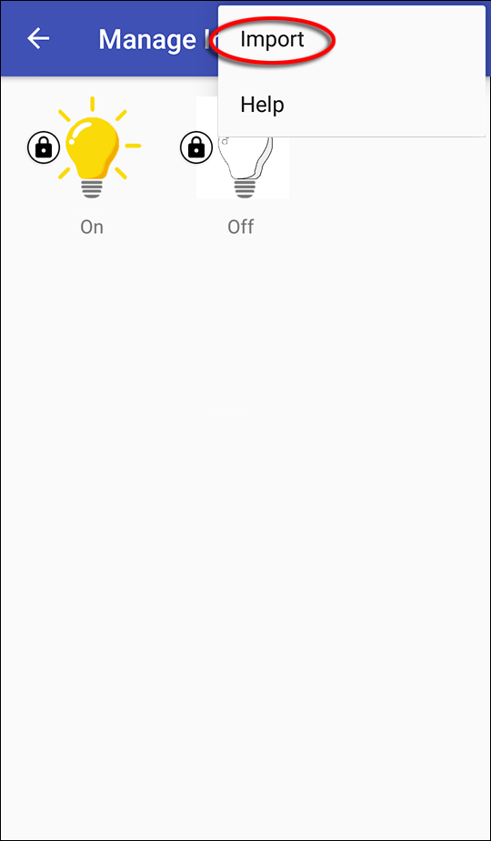

Dashboard bietet, im Gegensatz zu “Messages", eine grafische Benutzeroberfläche. Es können universelle Anzeige- und Steuerelemente angelegt werden, wie z. B. eine Temperaturanzeige oder ein Lichtschalter (Verwendung des MQTT-Protokolls).
Die Ansicht „Dashboard“ öffnet sich. Hier lassen sich Komponenten zur Anzeige von Sensordaten bzw. Werten des spezifizierten Topics anlegen und/oder zur Eingabe von Werten (über entsprechende Steuerlelemente), die an das angegebene „Publish Topic“ gesendet werden.
Ein Einblendmenü öffnet sich und bietet verschiedene Komponentenvorlagen an, welche für die unterschiedlichsten Zwecke eine gute Ausgangsbasis für eigene Lösungen bieten.

| Komponente | Erläuterung |
|---|---|
| Text View | Liefert den Inhalt einer Nachricht in Textform. Siehe dazu den Abschnitt Text View |
| Button/Switch | Erzeugt eine Schaltfläche bzw. einen Schalter. Siehe dazu den Abschnitt Button/Switch |
| Progress Bar/Slider | Stellt einen Wertebereich durch einen Balken dar. Mit „Publish Topic“ kann mithilfe eines Schiebereglers ein neuer Wert gesetzt und gesendet werden. Siehe dazu den Abschnitt Progress Bar/Slider |
| Option List | Erlaubt die Definition einer beliebigen Menge von Werten. Siehe dazu den Abschnitt Option List |
| Group View | Zur Gruppierung von Komponenten im Dashboard. Siehe dazu den Abschnitt Group View |
| Custom View | Erlaubt das Anlegen neuer Komponenten in HTML. Siehe dazu den Abschnitt Custom View. |
Stellt den Inhalt einer Nachricht in Textform dar. Sofern ein „Publish Topic“ angegeben wurde, kann in der Detailansicht ein Wert eingegeben und gesendet werden.
Erzeugt eine Schaltfläche, welche z. B. als Taster fungiert, der bei Betätigung eine Nachricht versendet. Dazu wird in „Off state“ nichts eingetragen. Wird die Schaltfläche als Schalter angelegt, der in Abhängigkeit des Wertes der letzten empfangenen Nachricht seinen Zustand ändert (an/aus), muss im „Off state“ ein Topic eingetragen sein.
Eine Komponente soll konfiguriert werden, die eine Lampe ein- und ausschaltet und gleichzeitig über den aktuellen Schaltstatus informiert.
Zu einer Hintergrundfarbe lässt sich zusätzlich auch ein Bild verwenden:
Es öffnet sich das Fenster „Select an Image“, welches eine Reihe von Icons und Symbolen zur Verfügung stellt. Alternativ dazu können auch eigene Bilder verwendet werden, die zuvor in die App importiert wurden (Eigene Bilder in die App importieren).

Nur so kann die Schaltkomponente den Schaltstatus („Topic (sub)“) vom Server abfragen und Schaltbefehle an den Server geben („Topic (pub)“).
Ein Wertebereich wird durch einen Balken dargestellt, wobei der Balken bis zum aktuellen Wert eingefärbt wird (wie bei einer Fortschrittsanzeige). Wurde ein „Publish Topic“ angegeben, kann in der Detailansicht durch einen Schieberegler ein neuer Wert gesetzt und gesendet werden.
Erlaubt die Definition einer Menge von Werten. Für jede Option kann ein Anzeigewert definiert werden, der anstatt des tatsächlichen Wertes angezeigt wird.
Für eine bessere Übersicht im Dashboard lassen sich Gruppen anlegen, denen einzelne Komponenten zugeordnet werden können.
Einzelne Komponenten lassen sich gruppieren oder können auch einer
anderen Gruppe zugeordnet werden. Dazu tippen
und halten Sie die gewünschte Komponentenkachel („Long Press“), bis ein
erscheint und Sie
per  in den Bearbeitungsmodus
wechseln können.
in den Bearbeitungsmodus
wechseln können.
Über „Group“ und „Pos“ kann das Icon nun in die gewünschte Position
gebracht werden.
Hier lassen sich beliebige Komponenten in HTML anlegen. Dazu kann der HTML-Code direkt in das dafür vorgesehene Feld geschrieben oder kopiert werden. Alternativ erhalten Sie durch Tippen auf das Überlaufmenü () unter „Insert Example“ drei verschiedene HTML-Vorlagen (Basic HTML, Color Picker und Gauge), die sich direkt in die Komponente einfügen und bearbeiten lassen.

Einige Dashboard-Komponenten erlauben die Einbindung von Bildern (Hintergründe, Status von Schaltern usw.). Damit eigene Bilder in der App zur Verfügung stehen, müssen diese zuvor in die App importiert werden:

Alle in die App importierten Bilder landen im Fenster „Manage Images“:

Jedesmal, wenn die App beendet wird, werden Bilder, die in keiner
Komponente verwendet werden, gelöscht. Um dies zu verhindern, können sie
geschützt werden. Im obigen Bild sind bereits zwei zuvor importierte
Bilder zu sehen. Beide sind mit solch einem Schutz (
 ) versehen.
) versehen.
Werden Bilder, welche Transparenzen enthalten, über das Feld „Image“ in die Komponente eingebunden, so bleiben diese Transparenzen erhalten. Die folgende Abbildung zeigt den Vergleich zwischen einem Bild mit (links) und einem ohne Transparenzen (rechts). Beide Bilder liegen über einem gelb eingefärbten Hintergrund: